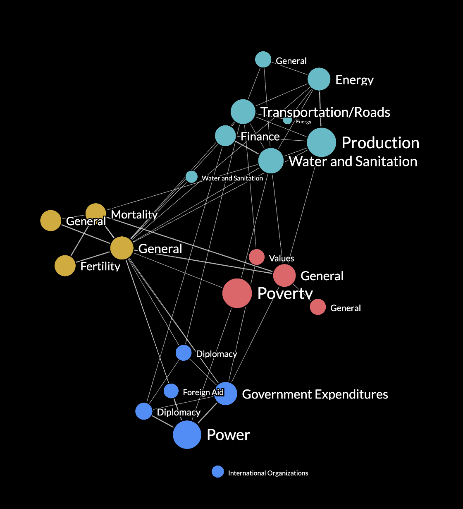
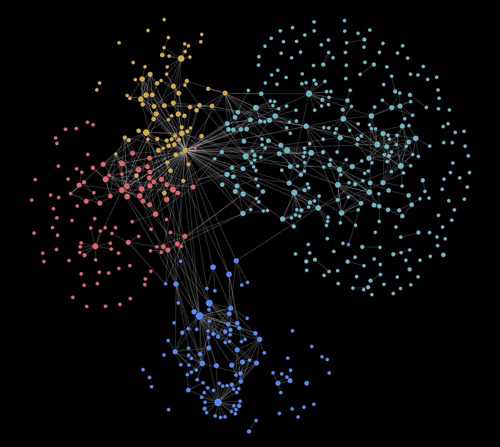

In this blog post, I will explore how to expand (create) an collapse (remove) subgraphs on a force-directed graph. This involves click events to either reveal child nodes belonging to a parent or reverse the action. This article aims to help readers understand the concepts related to filtering or updating graphs and be able to integrate such a feature into force-directed graphs for their web applications.
This is the second article of a three-part series delving deep into the creation of a suite of features or functionality associated with interactive and filterable graphs. I will continue from where I left off in my previous article.
What is hierarchical data
In the context of a hierarchy with three levels, it means that there are three distinct tiers or layers of elements, each one being more specific or subordinate to the one above it. Here's a breakdown of what each level typically represents:
Tier 1: This is the highest level in the hierarchy, often considered the most general category. Elements at this level provide a broad classification or grouping. In a hierarchical structure, they serve as the top-level nodes.
Tier 2: The second level represents a more specific category or subcategory within the higher-level grouping. Elements at this level are usually subsets of the Tier 1 elements.
Tier 3: The third level is the most specific within the hierarchy. Elements at this level are typically individual items or details within the Tier 2 subcategories. They are the most granular and detailed elements in the hierarchy.
A hierarchy with three levels allows for a structured way of organizing and categorizing elements, with each level providing increasing levels of detail and specificity. This type of hierarchy is common in various domains, including organizational structures, classification systems, and data modelling.
Modelling the collapsible or expandable functionality
Model 1: Display all higher-level nodes (parent hubs) with child nodes connected to a parent hub. A parent node 'expands' by being visually connected to newly introduced child nodes.
Model 2: Child nodes are not visually connected to parent hub, rather the parent node 'expands' by splitting into child nodes, eliminating the need for a parent hub.
I believe Model 1 is more commonly encountered in online examples and aligns with the typical mental model for updating graphs.
Model 2 was initially introduced to me by a client who requestd this feature for his graph application. It involves displaying connections between nodes from three different hierarchical levels within clusters and between clusters for a data modelling system. The challenge was intriguing, as I hadn't come across such an interactive graph before. In this article, I'll provide a detailed description of how I approached this task.

How is such a functionality useful?
A subgraph is a portion of a larger graph that represents a smaller, self-contained network of nodes and their connections.
The feature to expand and collapse subgraphs in a force-directed graph is incredibly useful for hierarchical data for the following reasons:
Hierarchical Data Representation: The ability to expand and collapse subgraphs allows users to visualize and explore these hierarchical relationships within and between clusters more effectively.
Reduced Cognitive Load When dealing with large hierarchical datasets, it's essential to provide users with the means to focus on specific branches or levels of the hierarchy while maintaining an understanding of the overall context. Expanding and collapsing subgraphs achieves this by showing or hiding specific sections of the hierarchy as needed, presenting information progressively.
Data preparation
In my dataset, the hierarchy consists of SUBMODULE (Tier 1) nodes at the highest level, followed by SEGMENT (Tier 2) nodes, and VARIABLE (Tier 3) nodes. Ensure that the dataset of nodes maintains a flat structure, even if the original dataset is hierarchical in nature. It only contains VARIABLES and each node is associated with its parent (SEGMENT) and higher-level parent (SUBMODULE). These hierarchical relationships should be represented as single-level properties, rather than nested properties.
Regarding the links in the dataset, they represent linkages between VARIABLES. Source and target properties from the array of nodes will be accessed when needed.
It's required to save a copy of the original dataset of nodes and links. This backup will prove valuable for implementing the collapsible and expandable functionality since it allows direct manipulation of the nodes and links arrays without affecting the original data.
To facilitate the distinction of nodes, they can be color-coded and clustered based on their submodule ID. To differentiate, I have only given SUBMODULE and SEGMENT nodes labels.
let nodes = data.nodes.map((d) => {
return {
NAME: d.NAME,
SUBMODULE: d.SUBMODULE, // MUST BE A UNIQUE ID
SUBMODULE_NAME: d["SUBMODULE NAME"], // PREFERABLY A UNIQUE LABEL
SEGMENT: d.SEGMENT, // MUST BE A UNIQUE ID
SEGMENT_NAME: d["SEGMENT NAME"], // PREFERABLY A UNIQUE LABEL
};
});
let links = data.links.map((d) => {
return {
SOURCE: d.SOURCE,
TARGET: d.TARGET
};
});
let origNodes = [...nodes]
let origLinks = [...links]
Initial Graph States
Be mindful that depending on how the user chooses to interact with the graph, there may be an assortment of SUBMODULE, SEGMENT or VARIABLE nodes on screen, such as in the image shown. There are rules governing how nodes respond to expand or collapse actions. To manage these rules for each node, I've created a JavaScript object named nodeCollapsedState. This object stores boolean values for all SUBMODULES and SEGMENTS, enabling us to determine whether a node should be expanded or collapsed. Initially, I've populated it to reflect the default state on page load. For instance, it suggests that all SEGMENTS are initially collapsed (with a value of 1), while all SUBMODULES are in an expanded state (with a value of 0)
let expandedAll = false
let nodeCollapsedState = {}
// Create the submodule nodes
SUBMODULES.forEach((d) => {
nodeCollapsedState[d] = expandedAll ? 1 : 0;
});
// Create the segment nodes for each submodule node
SEGMENTS.forEach((d) => {
nodeCollapsedState[d] = expandedAll ? 0 : 1;
});
Upon page load, the graph can be in one of two modes: fully collapsed or fully expanded. In the fully collapsed mode, only SEGMENTS are rendered. Conversely, in the fully expanded mode, only VARIABLES are rendered. I've introduced a variable called expandedAll to manage and store this initial rendering mode decision.
This approach allows for precise control over the initial visualization state of the graph, providing flexibility in how nodes are displayed.
Fully Collapsed
let expandedAll = false

Fully Expanded
let expandedAll = true

Explaining the expand actions
Let's first create a function called expandableAction to encapsulate all code related to the expand action.
SEGMENTS have a special behavior: a double-click action can trigger either an expand or a collapse action. The expand action is triggered only if there is no previous double-click action for that SEGMENT. Therefore, on initial view when expandedAll = false, clicking on any SEGMENT will initiate an expand action.
if (expandedAll === false) {
nodes = SEGMENTS
links = getLinksBetweenSegments()
}
expandableAction() {
// Code as described below
}
Clicking a Segment node
Remove node and links
Clicking on a SEGMENT will remove it. This involves removing any links where the clicked node acts as a source or target for other nodes.
Adding nodes and links
Upon clicking a SEGMENT, the objective is to display the VARIABLES associated with that SEGMENT.
In addition to introducing new VARIABLES, it also involves creating new connections between these variables. This includes establishing linkages between the VARIABLES and other SUBMODULE, SEGMENT, or VARIABLE nodes, regardless of whether they belong to the same submodule or a different one.
// dblclick on a SEGMENT node to expand into it's variable nodes
if (d.type === "tier2") {
// Clicked node
const nodeId = d.id;
// Flag to indicate that segment node is no longer in collapsed state
nodeCollapsedState[d["SUBMODULE"] + "_" + d["SEGMENT"]] = 0;
// Remove the segment node and submodule node
nodes = nodes.filter((node) => node.id !== nodeId);
// Remove any links where the clicked node is a source or target node
// New links will be drawn from each Variable node to their respective source/target node.
links = links.filter((link) => getSourceId(link) !== nodeId && getTargetId(link) !== nodeId);
// Variable nodes that are children of the same submodule and segment pair
const nodesToAdd = origNodes.filter((node) => node["SUBMODULE"] === d["SUBMODULE"] && node["SEGMENT"] === d["SEGMENT"]);
nodes = nodes.concat(nodesToAdd);
// Add links from expanded variables to either variables/segments/submodules from the same or different submodule
addLinksBwVarAndOthers(d);
}
Clicking a Submodule node
Remove node and links
Clicking on a SUBMODULE will remove it. This involves removing any links where the clicked node acts as a source or target for other nodes.
Adding nodes and links
When clicking on a SUBMODULE, the goal is to display the SEGMENTS and all types of linkages associated with that particular SUBMODULE.
The addLinksBwSegmentAndOthers function, serves a similar purpose as the addLinksBwVarAndOthers function. However, it focuses on identifying links connected to the SUBMODULE, and it checks these links for connectivity with other nodes.
// dblclick on SUBMODULE node to expand into it's SEGMENT nodes
if (d.type === "tier1") {
// Indicate that submodule node is no longer in collapsed state
nodeCollapsedState[d["SUBMODULE"]] = 0;
// Only segment nodes of submodule is added to screen
const nodesToAdd = SEGMENTS.filter((node) => node.SUBMODULE === d["SUBMODULE"]);
// Indicate that each newly introduced segment node is in collapsed state (their children nodes are not visible)
nodesToAdd.forEach((node) => {
nodeCollapsedState[node["SUBMODULE"] + "_" + node["SEGMENT"]] = 1;
});
nodes = nodes.concat(nodesToAdd);
// Remove the submodule node
nodes = nodes.filter((node) => node.id !== "submodule-" + d["SUBMODULE"]);
// Remove the links connected to the submodule
links = links.filter((link) => getSourceId(link) !== "submodule-" + d["SUBMODULE"] && getTargetId(link) !== "submodule-" + d["SUBMODULE"]);
// Add links from expanded segments to either variables/segments/submodules
addLinksBwSegmentAndOthers(d);
}
Identifying linkages between VARIABLES is straightforward, as the original array of links exclusively contains connections between VARIABLES. However, to establish linkages between VARIABLE and other types, such as SUBMODULES or SEGMENTS, we employ the addLinksBwVarAndOther function.
The primary purpose of this function is to ensure that new links are introduced only if both their source and target nodes are either already visible on screen or will become visible after the update function is executed.
How It Works:
The function achieves this by initially identifying links that should extend from or enter the clicked node. It then iterates over these potential links, checking whether the connecting node is an on-screen SUBMODULE, SEGMENT, or VARIABLE. To make this determination, it relies on the nodes array, which exclusively represents on-screen nodes.
function addLinksBwVarAndOthers(d) {
// Find links that should branch out from or enter the clicked node
const linksFromVarToOther = origLinks.filter((link) => link.sourceSubmodule === d["SUBMODULE"] && link.sourceSegment === d["SEGMENT"]);
const linksFromOtherToVar = origLinks.filter((link) => link.targetSubmodule === d["SUBMODULE"] && link.targetSegment === d["SEGMENT"]);
// Since other nodes may or may not be collapsed, linksFromVarToOther cannot be simply concatenated to array of existing links
linksFromVarToOther.forEach((link) => {
const src_ID = getSourceId(link);
const target_sub_seg_ID = "segment-" + link.targetSubmodule + "_" + link.targetSegment;
const target_sub_ID = "submodule-" + link.targetSubmodule;
const target_ID = getTargetId(link);
let newLink = {};
// Check if target segment node exists on screen already, and if so, create a link between variable and the target segment node
if (nodes.findIndex((n) => n.id === target_sub_seg_ID) !== -1) {
newLink = {
source: src_ID,
target: target_sub_seg_ID,
};
// If segment node doesn't exist, maybe it has been collapsed to the submodule level.
// Check if target submodule node exists on screen already, and if so, create a link between variable and the target submodule node
} else if (nodes.findIndex((n) => n.id === target_sub_ID) !== -1) {
newLink = {
source: src_ID,
target: target_sub_ID,
};
// If target segment and submodule node doesn't exist, that means the connection is between a variable and a variable from the same or different submodule.
} else if (nodes.findIndex((n) => n.id === src_ID) !== -1 && nodes.findIndex((n) => n.id === target_ID) !== -1) {
newLink = link;
}
links.push(newLink);
});
// Since other nodes may or may not be collapsed, linksFromOtherToVar cannot be simply concatenated to array of existing links
linksFromOtherToVar.forEach((link) => {
const target_ID = getTargetId(link);
const src_sub_seg_ID = "segment-" + link.sourceSubmodule + "_" + link.sourceSegment;
const src_sub_ID = "submodule-" + link.sourceSubmodule;
const src_ID = getSourceId(link);
let newLink = {};
if (nodes.findIndex((n) => n.id === src_sub_seg_ID) !== -1) {
newLink = {
source: src_sub_seg_ID,
target: target_ID,
};
} else if (nodes.findIndex((n) => n.id == src_sub_ID) !== -1) {
newLink = {
source: src_sub_ID,
target: target_ID,
};
} else if (nodes.findIndex((n) => n.id === src_ID) !== -1 && nodes.findIndex((n) => n.id === target_ID) !== -1) {
newLink = link;
}
links.push(newLink);
});
}
Explaining the collapse actions
Create a function called collapsibleAction to encapsulate all code related to the collapse action.
If expandedAll = false, clicking on SEGMENTS triggers an expansion instead of a collapse. However, if expandedAll is set to true, clicking on VARIABLES results in their collapse into a SEGMENT.
A SEGMENT will collapse into a SUBMODULE only if the previous action of that SEGMENT was to collapse its children into it.
For brevity, the code inside collapsibleAction mirrors expandableAction but functions in the reverse direction
collapsibleAction() {
// Code as described below
}
Clicking a Variable node
Removing nodes and links
Upon click of a VARIABLE, it is removed along with all other variables belong to the same SEGMENT. Connections to these variables are also removed.
Adding node and links
Upon click of a VARIABLE, the SEGMENT is rendered. New linkages between the SEGMENT and other types of nodes are also rendered.
Clicking a Segment node
Removing nodes and links
Upon click of a SEGMENT, it is removed along with all other SEGMENTS belonging to the same SUBMODULE. Connections to these SEGMENTS are also removed.
Adding node and links
Upon click of a SEGMENT, the SUBMODULE is rendered. New linkages between the SUBMODULE and other types of nodes are also rendered.
Executing the expand or collapse action
The nodeCollapsedState plays a crucial role in determining whether a double-click event should trigger an expand or collapse action. When a segment is in a collapsed state, a double-click should expand it. However, if the clicked node is a submodule, it should always expand.
In PIXI.js, there is no native double-click mouse action. To achieve this, you can monitor the number of click events and ensure that the time between the first and second click does not exceed 300 milliseconds.
It's important to note that while JavaScript supports a double-click event, when both a click and double-click event are present, only the click event is fired. Therefore, using a timeout method becomes a useful approach to implement double-click behavior effectively.
nodeGfx is a PIXI Container of a node, the creation of which is explained in my previous article.
The array of nodes and links to render is mutated in-place, the update function is called without a need to pass in any data parameters. The update function redraws the PIXI Containers and Sprites representing each node and link. It then 'reheats' the simulation to reactivate the force-directed simulation that governs the positioning and behavior of nodes in the graph.
let clickCount = 0
// Inside the update() function
const dblclickNode = (dd) => {
if (dd.type === "tier1" || (nodeCollapsedState[dd.SUBMODULE + "_" + dd.SEGMENT] === 1 && nodeCollapsedState[dd.SUBMODULE] === 0)) {
expandableAction(dd);
} else {
collapsibleAction(dd);
}
update()
};
nodeGfx.on("pointerdown", function (event) {
clickCount++;
const node = nodeGfxToNodeData.get(event.currentTarget);
if (clickCount === 1) {
timer = setTimeout(function () {
clickEvent()
clickCount = 0;
}, 300);d
} else if (clickCount === 2) {
clearTimeout(timer);
dblclickNode(node);
clickCount = 0;
}
});
Making adjustments for a better user experience
Entry location of new nodes
Ensuring that new nodes enter the graph close to their parent's location, typically near the mouse click point, serves several important purposes:
Hierarchical Relationship: This approach visually reinforces the hierarchical relationship between parent and child nodes. When new nodes appear in proximity to their parent, users can easily discern the structure and understand the connection between them.
User Orientation: By entering nodes close to the click point, it creates a smooth and visually coherent transition. Nodes don't appear abruptly in distant locations, which could be disorienting. Instead, the animation of new nodes flowing from the click point to their positions is more user-friendly.
When a user initiates the addition of new nodes by clicking on a submodule or segment node, the current coordinates of that parent node are retrieved. New nodes are then created, and their initial positions are set to match the coordinates of the parent node. This step ensures that the new nodes appear near their parent, which as explained earlier, will be removed from the screen.
// Inside the update() function
for (let i = 0; i < nodes.length; i++) {
if (prevNodes.length > 0) {
let centroid = prevNodes.find((n) => n.id === node.SUBMODULE + "_" + node.SEGMENT) || prevNodes.find((n) => n.id === node.SUBMODULE);
if (centroid && !node.x && !node.y) {
node.x = centroid.x;
node.y = centroid.y;
}
}
}
// Redrawing of PIXI Containers and Sprites
// ....
// Reheat the force layout only for the new graph state after collapse/expand, prevent unnecessary movment of elements on screen
if (!initial) {
simulation.force(
"charge",
d3
.forceManyBody()
.strength(expandedAll ? -80 : -150)
.distanceMin(100)
);
simulation.alphaTarget(0.2).restart();
simulation.on("tick", () => updatePositions());
} else {
simulation.force("charge", d3.forceManyBody().strength(expandedAll ? -100 : -250));
simulation.alphaTarget(0.5).restart();
simulation.tick(Math.ceil(Math.log(simulation.alphaMin()) / Math.log(1 - simulation.alphaDecay())));
updatePositions();
}
prevNodes = nodes
.filter((d) => d.type === "tier1" || d.type === "tier2")
.map((node) => {
return {
x: node.x,
y: node.y,
id: node.type === "tier1" ? node.SUBMODULE : node.SUBMODULE + "_" + node.SEGMENT,
};
});
Tweaking force-directed graph parameters
When new nodes are introduced into the graph, the force-directed simulation can initially cause these nodes to appear to "jump" or move abruptly before settling into their stable positions. By setting a lower alphaTarget value, this effect is minimized, creating a smoother and more controlled visual transition for the new nodes. This can be important for ensuring that the graph doesn't undergo rapid and potentially confusing changes in response to new node additions.
I've found that a high repel strength by setting a high forceManyBody charge works well for the initial static graph view, helping to spread out intricate connections between nodes within and across submodules for readabilitiy. However, it's essential to strike a balance. Using an excessively high repel strength can lead to strong repulsion and increasing distance between nodes on each update, resulting in undesirable effects. To mitigate this, I balance the forceManyBody charge with forceCollide. While forceCollide maintains a specified distance between nodes, it doesn't continually push them apart on update, providing a more controlled and visually pleasing layout.
distanceMin is the minimum distance between nodes over which this force is considered. It helps to void an infinitely-strong force if two nodes are exactly coincident. This is important here because when new nodes are introduced, all their initial coordinates match those of the parent node. Without a distanceMin parameter, the repelling force will be applied to these new nodes, and because they share identical positions, causes the infinitely-strong force.
If anyone reading this has a better approach to this problem of maintaining visually-pleasing layout after continuous updates, please message me!
simulation
.force(
"charge",
d3.forceManyBody().strength(-100).distanceMin(100)
);
.force(
"collide",
d3.forceCollide().radius((d) => d.radius)
)
High Charge
simulation.force("charge", d3.forceManyBody().strength(-300));
Low Charge
simulation.force("charge", d3.forceManyBody().strength(-150));
I'm keen to know if there is a more concise and performant method for creating this feature. If you have any insights or suggestions, please feel free to message me!
This feature represents just one of the many ways to emphasize nodes and connections by focusing on subgraphs. There are numerous other features that can enhance interactions with graphs and uncover key connections, especially in the case of large and complex graphs. In upcoming sections, I will provide in-depth descriptions of how to integrate these additional features, such as a nearest neighbour and shortest path search, into the web application.